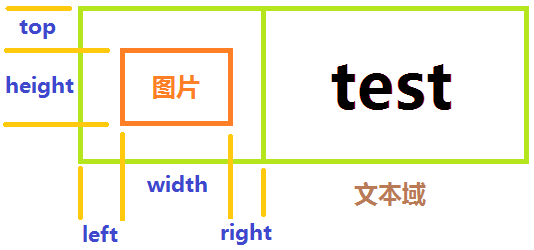

指定元素的样式。
该属性不能在以下元素中使用：content、head、script、style、hidden。
针对可以支持class属性的标签，可以指定多个样式，用逗号分隔类名。例如：<div class="left_menu,important">。这么做可以把若干个CSS样式应用到同一个标签上。
指定控件的可见状态。
@value string true/false
@default false
true 表示控件为隐藏状态
false表示控件为可见状态
与样式中的display有相同的作用。
当同一个控件同时设置了display与hide时，hide属性将失效。
指定控件的id
同一个页面的所有控件id必须保证唯一。
指定控件的名字。
@value string 任意的字符串
可以允许不同控件使用相同name，不过如果没有特殊的需求最好不要这样使用。
对于有相同name的控件，通过lua的getElement系列函数可以同时获得。
有相同name的radio控件，表示同一组，有选择互斥效果。
指定是否自动调整文字大小以适应显示区域。当显示区域不足以显示所有文字内容时，文字自动缩小以显示更多内容。
@value true/false
@see minfontsize
注: 此功能开启后，当文字需要缩小时，文字字号的设置将失效。同时文字最大不超过设置的字体大小。
当未设置linebreakmode或者linebreakmode为none时，只有numlines=1时adjustsfontsize生效。
当设置linebreakmode为head/tail/middle/时，由numlines和minfontsize共同决定显示效果。 在numlines指定的行数内，尽量多的显示文字内容，并且保证字体大小不小于minfontsize指定的大小。
针对容器控件，指定其子控件的水平对齐方式。
目前支持此属性的控件div、td。
@value string left/center/right
@default left
注：水平的对齐是将整个控件区域整体做对齐。
当image控件的src为gif图片时，指定gif图片是否自动播放。
@value string true/false
@default true
注：如果设置了初始化后不默认播放，即autoplay=false，那此时设置istap属性无效，istap恒等于true，否则无法启动gif动画，gif将变得没有意义。
指定控件是否有边框。当border为1时，会显示默认边框或根据样式中设定的border值显示。如果border值为0，则不会显示边框。即使样式中指定了border相关的样式，也不会显示边框。
border默认宽度1px，默认颜色#d4d5d9，默认弧度10。
@value string类型 0/1
1表示有边框
0表示无边框
@default 实际控件的默认值参见对应控件说明文档
指定控件选项是否默认选中。
@value string checked/true/false
checked相当于true
例: checked='checked'
支持控件：segment、switch、checkbox、radio
注释：目前客户端通过getPropertyByName返回此属性的值的时候转化为"true"或者"false"。被选中项为true，否则为false。对于互斥的控件如segment、switch、radio控件，在设置checked的属性的时候，只能设置checked/true，然后互斥的控件会自动把其他控件设置成false，并改变显示效果。
指定输入框中清空按钮显示的方式。
@value string类型 never/editing/unlessEditing/always
never:不显示清空按钮
editing:编辑时显示清空按钮
unlessEditing:非编辑模式时显示情况按钮
always:一直显示情况按钮。
@default 为了保持与旧版本的兼容默认值各平台会有区别:
iOS 中默认值为editing。
其他平台为:never。
指定控件圆角的弧度。
当前只有segment支持该属性。
@value number 10 单位是px，但不需要写
指定按钮点击的延时时间，也就是两个点击的最小时间间隔。
@value number 单位秒。支持浮点数，value需要大于等于0
@default 0
注：异常值(<0)做0处理。
指定控件是否可用，即是否响应用户操作。
@value string true/false
@default true
true 表示接受用户操作
false 表示不接受用户操作
当控件enable被置为false时，控件本身及其子控件都不再响应用户操作。但是对其父控件不会产生影响。
对于由于父控件enable被置为false而导致子控件无法响应的情况，子控件的enable属性依然为子控件本身的值，不会因为其不可点击而改变。
注：当enable属性值为非法值时,按照控件默认值处理.
定义当前密码框内容的加密方式，只能用于密码输入框。指定加密方式后，通过submit按钮完成form表达提交时，会自动做加密处理。
@value string 既定的加密方式
支持的加密方式:
00(不加密)
01(一次一密，使用AES加密)
A0(证书加密，加密算法RSA)
A1(先证书加密后一次一密)
以上所有结果最后都会做uri编码。
注: 5.2版本及之前版本支持encryptMode,5.3版本更正为encryptmode. 同时为了兼容也支持encryptMode.我们建议使用encryptmode.
指定img控件图片加载失败时的显示图片。
@value string 图片路径，value格式同img的src属性
@see loading
webview专属属性，见webview:goofline。
文本域中的提示文字。当输出内容时隐藏。各个平台效果可能会略有差异。
@value string 任意字符串
指定链接的目标的URL。用于<a>标签。
@value string url字符串
href值的类型:
<a href='/relative url'>页面内容</a>: 与客户端配置的ewp服务器地址组合成链接地址。请求EWP服务器，将返回的内容push到客户端缓存中，并显示返回内容。用户页面跳转。<a href='local://……'>历史明细</a>: 当以local://开头时则直接加载客户端本地内容在客户端显示，并将内容push到客户端缓存中。<a href='http://……'>www.baidu.com</a>: 当url以http://或https://开头时表示需要通过手机浏览器显示url内容。<a href='tel://8888888888'>客服电话</a>: 当url以tel://开头则表示需要向指定号码拨打电话。<a href='sms://8888888888'>客服电话</a>: 当url以sms://开头则表示需要向指定号码发送短信。<a href='mailto://'>客服邮件</a>: 当url以mailto://开头则表示向指定地址发送邮件邮件。mailto://example@phplamp.com,example1@phplamp.com?subject=主题&body=内容&cc=cc@gmail.com,cc1@gmail.com&bcc=bcc@gmail.com,bcc1@gmail.com
mailto://后面为收件人，多个收件人地址以","分隔;用于密码输入框，指定密码键盘是否按照正常的键盘顺序显示。
@value string true/false
@default false
当image控件的src为gif图片时，指定是否需要支持点击图片暂停或播放gif动画。
@value string true/false
@default true
注：如果设置了istap=true，那将不会响应img控件的onclick属性。
指定控件左侧小图标。通常针对button和inputtext控件。
@value string 图片路径，value格式同src属性
@see rightimg
指定输入框中左侧图标的显示模式。
@value string never/editing/unlessEditing/always
@default never
@see rightimgmode
指定控件左侧小图标的显示位置，目前只有button控件支持。
@value number left,right,top,width,height
@see rightimgpos
例：<input type='button' leftimg='local:a.png' leftimgpos='5,5,2,30,30' value='test'/>
注：

指定文字省略模式.
@value string类型 head/tail/middle/none
head:表示文字开始部分省略，用'...'代替
tail:表示文字结尾部分省略，用'...'代替
middle:表示文字中间部分省略，用'...'代替
none:不使用'...'代替文字
指定img控件图片加载过程中的加载图片。
@value string 图片路径，value格式同img的src属性
@see failed
指定是否以跑马灯的方式循环展示
@value true(以跑马灯方式循环展示)/false(不以跑马灯方式循环展示)
指定最小字号。该属性和adjustsfontsize组合使用，当adjustsfontsize为true时，文字会自动调整大小。minfontsize用来限制最小字体。以防止文字太小造成阅读障碍。
指定文字显示的行数。0代表没有行数限制。
指定控件未选中状态的颜色。
当前只有switch支持该属性。
@format #RRGGBB(如#000000)
@default 实际控件的默认值参见对应控件说明文档
指定控件选中状态显示的颜色。
当前只有segment、switch支持该属性。
@format #RRGGBB(如#000000)
@default 实际控件的默认值参见对应控件说明文档
指定键盘上确定按钮的lua事件。当键盘确定按钮被点击时触发此事件。
指定键盘中确定按钮的类型，此功能仅针对ios平台。
@value string类型 default/go/Google/join/next/route/search/send/Yahoo/done/call
类型分别对应ios键盘确定按钮的几种类型。
指定控件右侧小图标。通常针对button和inputtext控件。
@value string 图片路径，value格式同src属性
@see leftimg
指定输入框中右侧图标的显示模式。
@value string never/editing/unlessEditing/always
@default never
@see leftimgmode
指定控件右侧小图标的显示位置，目前只有button控件支持。
@value number left,right,top,width,height
@see leftimgpos
例：<input type='button' rightimg='local:a.png' rightimgpos='5,5,2,30,30' value='test'/>
注：属性规范说明同leftimgpos属性。
指定table控件每一行分割线颜色。格式为#RRGGBB。
table控件默认没有分割线。当指定separator属性后，会在行间显示分割线，通常为1个像素高度，宽度为table宽度。颜色为separator中指定的颜色值。
格式: <table separator='#RRGGBB'></table>
指定文字阴影效果的颜色
@value 格式为#RRGGBB
@see shadowoffset
指定文字阴影效果的偏移量
@value x、y方向偏移量，格式为(x,y)
@defalut (0,-1)
@see shadowcolor
注： shadowcolor和shadowoffset组合使用。若没有设置shadowcolor，只设置了shadowoffset，则没有阴影效果；若没有设置shadowoffset，只设置了shadowcolor，则有阴影效果，阴影偏移量按默认设置来。
inputtext控件为日期输入框时支持，指定显示在界面中的日期格式
@value string 日期格式匹配字符串
@default 格式 yyyyMMdd
注： 5.2版本及之前版本支持showFormat，5.3版本更正为showformat。同时为了兼容也支持showFormat
我们建议使用showformat
指定image图片的路径。例: <img src=''>
@value string 图片路径
src支持三种格式的路径:
<img src='head.png'>或<img src='local:head.png'>。local:表示需要本地加载的特征，后面跟图片的名称或路径。http://、https://、ewp_local://这三种协议都是表示加载远程图片。http://与https://表示该图片资源位于第三方的服务器上； ewp_local://表示该图片资源位于EWP服务器中。
模板可能会根据图片尺寸或排版需要制定固定的宽或高，会以参数形式通知客户端，例如："ewp_local://img/1.png?h=100&w=200"。客户端将样式中指定的width、height值通过/map/get_pic的w、h参数上传服务器。如果样式中没有width、height值，则获取src中的w、h参数作为get_pic接口的w、h。注:
| 接口方法 | http://EWP/map/get_pic |
| HTTP请求方法 | POST |
| 描述 | 客户端向服务器请求图片资源，该资源可位于EWP中，也可位于第三方服务器上。 |
| 接口需求方 | 客户端 |
| 接口提供者 | EWP服务器 |
| 输入参数（加密信道中传输） | |
| url | img标签src属性值(需要URI编码) |
| w(可选) | 图片像素宽度 |
| h(可选) | 图片像素高度 |
url，w，h参数的获取原则:
w、h参数，并且将整个src内容做编码。width值作为w参数值。如果样式中没有，则取src中的w参数。如果src中没有w，则可以不传w参数。w的处理方式。注:由于src参数有可能从外网服务器获取，因此w、h参数的含义存在差异。比如w、h参数可能不代表图片的宽高。这时需要通过样式指定w、h的值，建议使用src明确图片宽高。
文本域的输入类型，多种类型时用;分割。
@value string 规定可以支持的类型
支持的类型如下:
-wap-input-format:'N' 表示只能输入整数，如123、-123
-wap-input-format:'n' 表示只能输入实数，如123、-123、125.5、-0.5
-wap-input-format:'date' 表示要求输入日期
-wap-input-format:'phone' 表示要求输入电话号码-wap-input-format:'url' 表示输入网址, 如 https://www.baidu.com;(只有iOS支持)-wap-input-format:'email' 表示输入邮箱地址, 如 12345@163.com;(只有iOS支持)
指定密码框中的密码代替字符。
考虑到兼容性问题，默认效果不做统一要求。
iOS平台默认效果:●
AD平台效果:*
指定控件滑块的颜色。
当前只有switch支持该属性。
@format #RRGGBB(如#000000)
@default 实际控件的默认值参见对应控件说明文档
指定控件显示的图片。远程图片获取接口和src属性一致，但不需要考虑w、h参数。
当前只有segment支持该属性。
@format1 local:image.png（加载本地资源，这里兼容没有local关键字的情况）
@format2 http:// | https:// | ewp_local://（加载网络资源）
注：该属性的优先级大于标签间文本显示内容，若标签同时写了titleimg属性和标签间文本，则标签间文本不显示。
规定标签元素的类型，如<input type='button'/>。
@value string 规定的类型
针对容器控件，指定其子控件的垂直对齐方式
针对文本类控件，指定其文本的垂直对齐方式
目前支持此属性的控件div、td、radio、checkbox。
@value string top/middle/bottom
@default 容器控件默认为top，文本控件默认为middle
针对容器控件：
垂直对齐只适用于单行内容。当有垂直对齐属性时，默认认为容器中只有一行。
当对齐方式为top时，控件上边与上边距对齐。
当对齐方式为bottom时，控件下边与下边距对齐。
当对齐方式为middle时，控件相对于父控件居中对齐，同一行控件中心点在同一水平线上。
指定控件的值。
@value string 任意的字符串
通常控件的value值与显示的内容是不同的。
如<checkbox value='male'>男</checkbox>，这里的男是显示给用户看的，而value值male则是用来上传服务器的。
但是对于部分控件value可能有特殊的含义，如button控件的value被用来作为按钮上的文字显示。
inputtext控件为日期输入框时支持，指定回传服务器的Value值日期格式
@value string 日期格式匹配字符串
@default 格式 yyyyMMdd
注： 5.2版本及之前版本支持valueFormat，5.3版本更正为valueformat。同时为了兼容也支持valueFormat
我们建议使用valueformat
指定跑马灯移动的速度。属性值代码每秒文字移动的像素数或坐标点数。
需要和loop属性组合使用
当输入框内容改变时触发此事件
针对用户的点击事件，并且控件在可用状态下，触发此事件
当输入框失去焦点时触发此事件
当输入框获的焦点时触发此事件
在Android系统中，滚动视图ScrollView和列表视图ListView（一般用于瀑布流开发）由于都有滚动效果，在嵌套使用时会有事件冲突。需要对ListView做特殊处理，才能保证两者的滚动效果没问题。但在某些项目需求中，可能会希望ScrollView的滚动距离响应不那么灵敏（比如同时响应上下滚动和水平手势滑动的时候），若直接修改产品代码，就会造成已有的ListView处理失效，产生兼容性问题。
为解决此问题，这里增加属性minscrolllimit，表示当容器控件可以滚动时，设置滚动视图支持滑动的最小限制，当手指移动距离小于此值时，不认为是滚动。
目前只有body、div、table支持此属性。
@value number 滑动最小距离限制数值（320*480标准模板下），为0表示不处理
@default 0
注： 除Android系统，其他平台不需要处理此属性。
| Date | Note | Modifier |
|---|---|---|
| 2014-11-28 | 属性 | lin.jitao |
| 2015-01-14 | 增加separator属性说明 | lin.jitao |
| 2015-02-02 | 修正src参数的处理及get_pic接口的参数处理 | lin.jitao |
| 2015-04-08 | 增加新的属性 | lin.jitao |
| 2015-04-09 | 增加属性titleimg、cornerradius、ontintcolor、offtintcolor、sliderColor，修改属性valign的说明 | zhou.changjin |
| 2015-04-28 | 补充关于src中w、h参数对分辨率的处理方案 | lin.jitao |
| 2015-06-05 | 修改sliderColor名称为thumbColor | zhou.changjin |
| 2015-06-05 | 修改thumbColor名称为thumbtintcolor | zhou.changjin |
| 2015-06-06 | 增加shadowcolor和shadowoffset的组合关系说明 | zhou.changjin |
| 2015-06-08 | 完善linebreakmode和adjustFontSize说明 | zhou.changjin |
| 2015-06-08 | 修改linebreakmode，adjustFontSize，numlines说明 | lin.jitao |
| 2015-08-20 | 修改isorder默认值为false | zhou.changjin |
| 2015-09-07 | 增加id属性，调整各属性以字母顺序排列，同时增加相关属性的引用链接 | zhou.changjin |
| 2015-09-11 | 修改所有属性名位小写,不包含大写 | lin.jitao |
| 2015-09-17 | 增加encryptmode支持encryptMode写法的说明 | zhou.changjin |
| 2015-09-18 | 增加属性leftimgpos、rightimgpos | zhou.changjin |
| 2015-09-21 | 补充属性showformat、valueformat说明 | zhou.changjin |
| 2015-11-12 | 增加属性gooffline | zhou.changjin |
| 2015-11-12 | 增加特殊属性minscrolllimit | zhou.changjin |